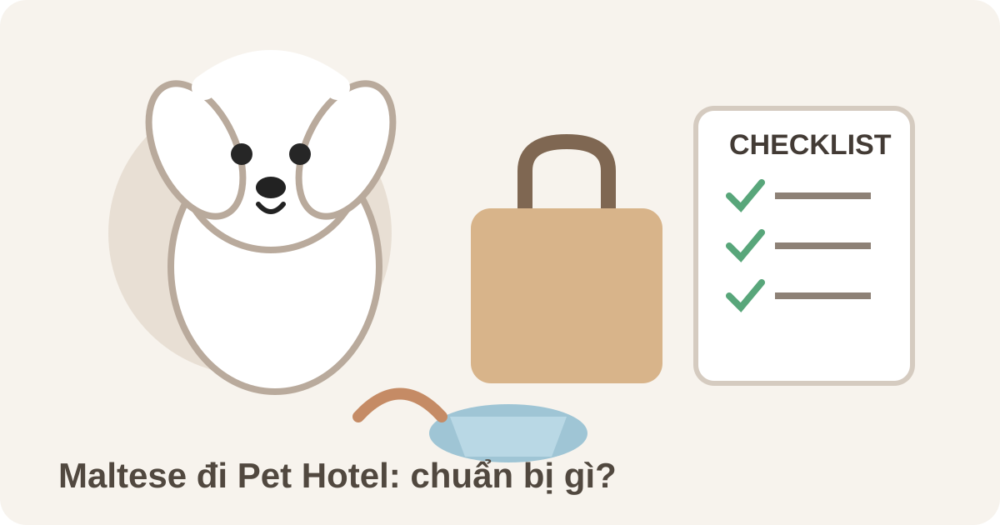

Maltese đi khách sạn cần chuẩn bị gì? Checklist trước khi gửi
Trả lời nhanh: trước khi gửi Maltese đi khách sạn, hãy bàn giao rõ cân nặng thực tế, sức khỏe, khẩu phần, thuốc nếu có, thói quen đi vệ sinh, phản ứng khi xa chủ, mức vận động và tình trạng bộ lông. Maltese là giống chó nhỏ, lông dài cần chăm đều và thường gắn bó với người; vì vậy thông tin cụ thể của chính bé quan trọng hơn các mô tả chung về giống.

Checklist nhanh trước khi Maltese đi khách sạn
Chuẩn bị một ghi chú gồm tuổi, cân nặng hiện tại, tình trạng sức khỏe và tiêm ngừa theo yêu cầu của cơ sở, thuốc đang dùng nếu có, loại thức ăn và lượng mỗi bữa, lịch đi vệ sinh, mức vận động, phản ứng khi ở một mình, tình trạng lông hiện tại và số điện thoại dự phòng.
Nếu cần checklist áp dụng cho mọi giống, xem chuẩn bị trước khi gửi thú cưng khách sạn. Bài này đi sâu vào Maltese: vóc dáng nhỏ, bộ lông dài dễ rối nếu thiếu chăm sóc và khả năng gắn bó mạnh với người chăm sóc.
1. Bàn giao sức khỏe và cân nặng thực tế
Đừng chỉ ghi “bé khỏe”. Hãy báo cân nặng hiện tại, bệnh nền, dị ứng, vấn đề răng miệng, da-lông, tiêu hóa hoặc thuốc đang dùng. Nếu bé đang ho, nôn, tiêu chảy, lừ đừ hoặc có biểu hiện bất thường, nên trao đổi với cơ sở trước ngày nhận phòng và làm theo hướng dẫn thú y khi cần.
Maltese thuộc nhóm chó nhỏ; tuy nhiên kích thước từng cá thể khác nhau. Vì vậy cân nặng thực tế hữu ích hơn tên giống khi cơ sở xác nhận điều kiện chăm sóc và giá lưu trú.
2. Giữ khẩu phần quen thuộc và ghi lượng theo từng bữa
Ghi tên thức ăn, lượng mỗi bữa, số bữa, món cần tránh và cách bé thường ăn. Nếu cơ sở cho phép mang thức ăn riêng, chia sẵn theo bữa giúp giảm nhầm lẫn. Không nên đổi thức ăn sát ngày gửi nếu không có lý do phù hợp.
Nếu Maltese từng ăn ít khi xa chủ hoặc ở môi trường lạ, hãy báo ngay lúc bàn giao. Bạn cũng có thể xem bài chó đi khách sạn bỏ ăn để biết những thông tin nên theo dõi.
3. Kiểm tra bộ lông trước kỳ lưu trú
American Kennel Club mô tả Maltese có bộ lông dài, thẳng và mượt; với lông dài, việc chải và comb nhẹ hằng ngày giúp hạn chế rối. Trước ngày gửi, nên kiểm tra các vùng dễ ma sát như sau tai, nách, ngực, chân và vùng đeo harness. Nếu phát hiện búi rối nhỏ, xử lý nhẹ nhàng sớm sẽ dễ hơn để lâu thành mảng bết.
Nếu lông đã rối sát da, không nên tự đưa kéo vào sát da để cắt. Hãy trao đổi với người có chuyên môn. Nếu cần xử lý lông trước hoặc sau kỳ lưu trú, tham khảo dịch vụ Grooming chó mèo và bài khi nào cần gỡ rối lông.
Có nên tắm Maltese ngay trước ngày gửi?
Không có quy tắc bắt buộc cho mọi bé. Nếu vừa tắm, cần bảo đảm lông được làm khô phù hợp và da không có kích ứng. Nếu bé đang có vấn đề da-lông hoặc dễ stress khi grooming, nên ưu tiên sự ổn định thay vì cố thêm một buổi chăm sóc sát giờ check-in.
4. Nói rõ phản ứng khi xa chủ và gặp môi trường mới
Maltese là giống chó đồng hành, thường thích ở gần người. AKC lưu ý một số Maltese có thể gặp khó khăn khi bị để một mình lâu và có thể sủa nhiều khi buồn chán hoặc cô đơn. Đây là đặc điểm tham khảo ở cấp giống, không phải dự đoán chắc chắn cho từng cá thể.
Khi bàn giao, hãy mô tả bằng hành vi quan sát được: bé có sủa khi đóng cửa, có ngủ một mình được không, có giữ thức ăn hoặc đồ chơi, có né người lạ, có phản ứng với chó lớn hay không. Những thông tin này thực tế hơn các nhãn chung như “hiền” hoặc “nhát”.
5. Kiểm tra dây dắt, harness và vật dụng mang theo
Nếu Pet Hotel yêu cầu mang dây dắt hoặc harness, hãy kiểm tra độ vừa vặn trước ngày gửi. Phụ kiện quá lỏng có thể dễ tuột, trong khi quá chật gây khó chịu. Hỏi trước cơ sở về đồ chơi, chăn, áo hoặc vật dụng cá nhân được phép mang để tránh chuẩn bị dư thừa.
Không cần mang quá nhiều đồ. Ưu tiên những thứ giúp người chăm hiểu và duy trì nếp sinh hoạt của bé: khẩu phần, thuốc có hướng dẫn, phụ kiện cần thiết và thông tin liên hệ.
6. Checklist bàn giao tại quầy
- Tuổi, cân nặng và tình trạng sức khỏe hiện tại.
- Thông tin tiêm ngừa theo yêu cầu của cơ sở.
- Thức ăn, lượng mỗi bữa và món cần tránh.
- Thuốc kèm hướng dẫn nếu đang điều trị.
- Lịch đi vệ sinh và mức vận động quen thuộc.
- Phản ứng khi xa chủ, với người lạ, chó lạ và tiếng động.
- Tình trạng lông, vùng đang rối hoặc da đang nhạy cảm.
- Dây dắt/harness nếu cơ sở yêu cầu.
- Người liên hệ chính và dự phòng.
7. Hỏi giá và đặt phòng Maltese tại Lumi Pet
Để được xác nhận phù hợp, hãy gửi cân nặng thực tế, ngày check-in/check-out, tuổi, tình trạng sức khỏe và yêu cầu chăm sóc đặc biệt. Giá cần đối chiếu theo bảng giá hiện hành; bài viết không tự đặt một mức giá cố định cho Maltese.
Cần gửi Maltese đi Pet Hotel?
Xem thông tin Khách sạn thú cưng Bình Thạnh hoặc gửi thông tin của bé để Lumi Pet kiểm tra trước khi nhận phòng.
Câu hỏi thường gặp
Maltese đi khách sạn cần chuẩn bị gì?
Ưu tiên sức khỏe, cân nặng, khẩu phần, thuốc nếu có, lịch sinh hoạt, phản ứng khi xa chủ, tình trạng lông và liên hệ dự phòng.
Maltese lông dài có cần chải trước khi gửi không?
Nên kiểm tra và chải nhẹ nếu bé quen việc này. Lông dài cần chăm đều để hạn chế rối; nếu đã bết sát da, nên nhờ groomer đánh giá thay vì tự cắt sát da.
Maltese có dễ buồn khi xa chủ không?
Maltese thường gắn bó với người và một số cá thể có thể khó chịu khi ở một mình. Hãy báo đúng hành vi từng thấy ở bé để cơ sở có thông tin chăm sóc phù hợp.
Giá khách sạn cho Maltese là bao nhiêu?
Không nên suy giá từ tên giống. Hãy cung cấp cân nặng thực tế và thời gian lưu trú để đối chiếu bảng giá hiện hành.
Bài liên quan
- Chihuahua đi khách sạn cần chuẩn bị gì?
- Pomeranian đi khách sạn cần chuẩn bị gì?
- Mèo lần đầu đi khách sạn cần lưu ý gì?
- Khách sạn chó mèo cần kiểm tra gì?
Nội dung nhằm hỗ trợ chuẩn bị trước kỳ lưu trú, không thay thế tư vấn thú y. Đặc điểm giống chỉ là bối cảnh tham khảo; hãy ưu tiên sức khỏe và hành vi thực tế của từng bé.